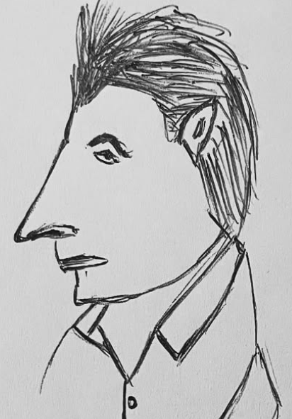

who's brian?
 Illustration by @Alexhouni
My career began as a translator for English-speaking humans, after hearing one too many times that "us frogs can't croak English properly."
What started as simple translations soon grew into something bigger: clients needed discreet, genuine help navigating French bureaucracy, securing dream properties, unlocking hidden gems, and managing complex dealings with lawyers, notaires, and officials.
That's how I became France's Butler.